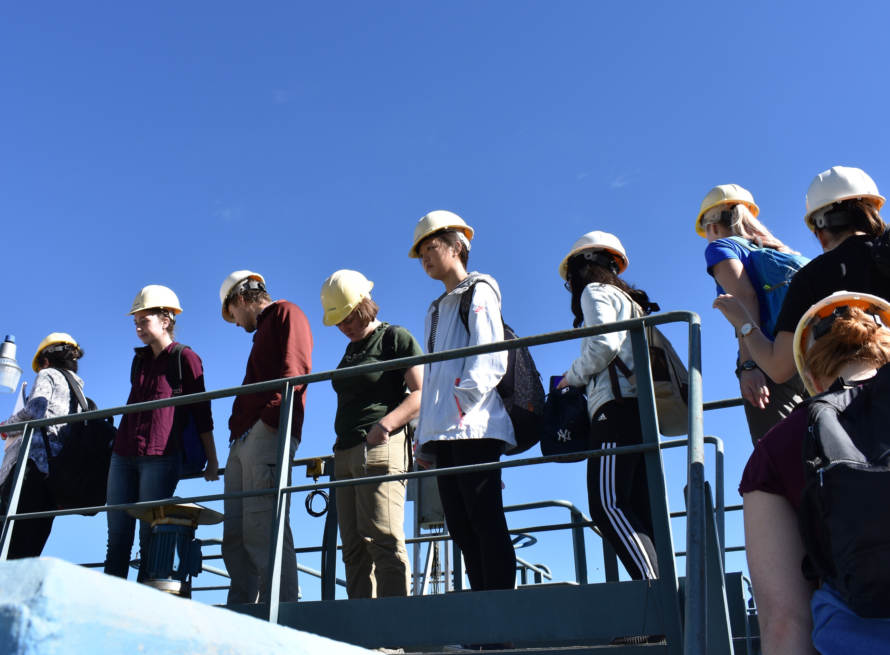

Nearly 3 billion people in the world do not have access to clean and safe drinking water.
1,000 children die everyday due to water related diarrheal diseases.
More than 80% of our wastewater is discharged back to the environment without proper treatment.
Access to safe drinking water is a fundamental human right that AguaClara Cornell strives to uphold and protect. We are committed to developing sustainable, municipal water treatment plants that empower communities with minimal access to clean water. At AguaClara Cornell, we foster a collaborative work and learning environment where students from all disciplines and backgrounds unite. We research, design, and develop technologies that are implemented locally by our partner organizations to bring safe water on tap!